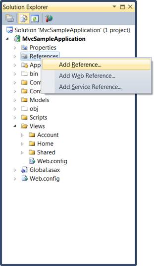
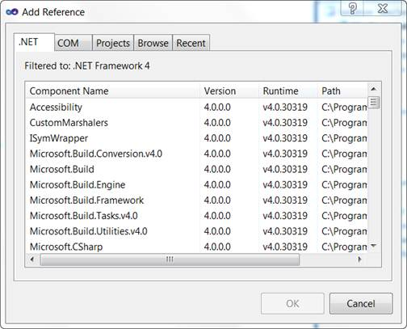
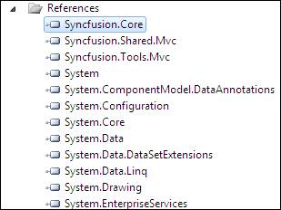

The following are the steps to add Reference Assemblies:
1. In the Solution Explorer, right-click the References folder.
2. Click Add Reference.

Figure 45: Add Reference option displayed on right-clicking the References Folder
3. The Add Reference dialog box opens. The .NET tab is highlighted by default.

Figure 46: Add Reference Dialog Box
4. Select the following assemblies:
· Syncfusion.Core
· Syncfusion.Tools.Mvc
· Syncfusion.Shared.Mvc.
5. Click OK. The selected assemblies will be added to the Reference folder.

Figure 47: Selected Assemblies displayed under the References Folder